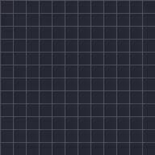

Postęp tekstu

Pokazuje tekst między początkiem a końcem, po znakach, słowach lub wierszach, z opcjonalnym zanikaniem, przesuwaniem, skalowaniem lub rozmyciem.
Postęp tekstu pokazuje warstwę tekstu po trochu. Animuj Koniec od 0 % do 100 %, a tekst pojawia się według Według: znaku, słowa albo wiersza, w wybranym Kierunek. Pojawianie się określa, jak każdy fragment wchodzi: wyskakując, zanikając, wsuwając, powiększając, pomniejszając lub rozmywając. Gotowe presety Typewriter, Fade In by Word, Slide Up by Letter i Pop In mają już ustawione klatki kluczowe.
Ustawienia
| Ustawienie | Typ | Zakres | Domyślnie |
|---|---|---|---|
| Początek | Liczba | Od 0% do 100% | 0% |
| Koniec | Liczba | Od 0% do 100% | 100% |
| Według | Wybór | Znak, Słowo, Wiersz | Znak |
| Kierunek | Wybór | Od początku, Od końca, Od środka, Losowo | Od początku |
| Pojawianie się | Wybór | Wyskok, Zanikanie, Wsuń od dołu, Wsuń od góry, Wsuń od prawej, Wsuń od lewej, Powiększanie, Zmniejszanie, Rozmycie | Zanikanie |
| Miękkość | Liczba | Od 0 do 50 | 0 |
| Odległość | Liczba | Od 0 do 1000 | 40 |
| Ziarno | Liczba | Od 0 do 1000 | 1 |
Presety
Wybierz go na stronie szczegółów efektu w Bibliotece efektów. Każdy z nich to gotowe ustawienie, które możesz dalej edytować.
- Maszyna do pisania
- Pojawianie słowami
- Wsuwanie literami od dołu
- Wyskok